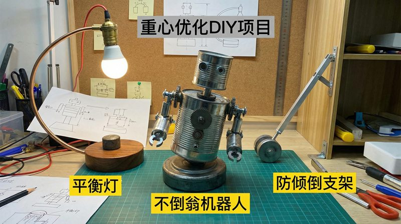
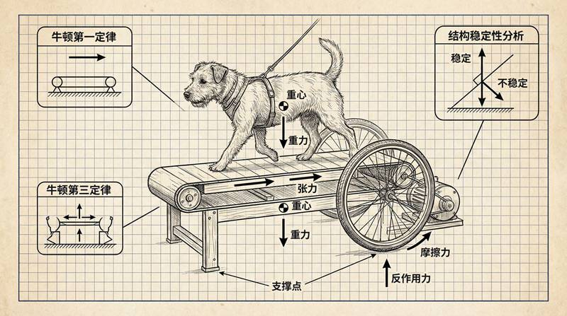
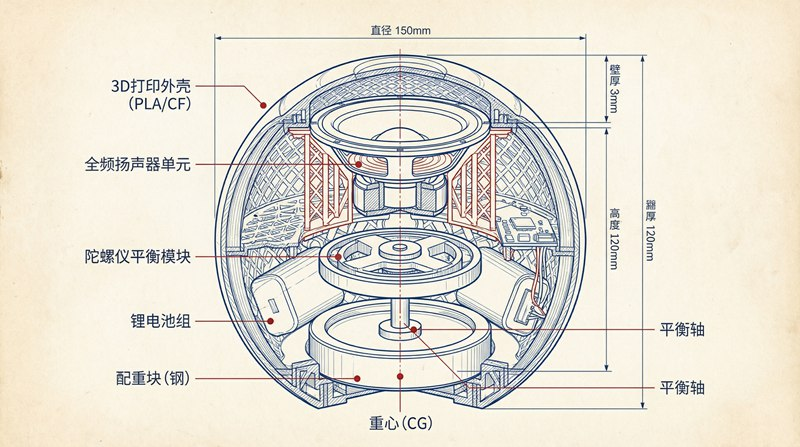

返回课程列表
第二课
静力学基础
机械结构设计与3D打印的力学
⏱️ 约45分钟
3D打印让每个人都能制造复杂零件，但打印件的强度和精度需要力学知识来保证。层间结合力、填充密度、打印方向都影响最终强度。

3D打印件的受力分析
3D打印件是逐层堆积的，层间结合力通常弱于层内强度。打印方向的选择直接影响零件在受力方向上的强度。

3D打印的力学优化
打印参数对强度的影响：
- 打印方向：受拉方向应与打印层平行，层间结合力弱不宜受拉
- 填充密度：100%填充最强但费时费料，20-40%填充适合大多数应用
- 壁厚：外壁厚度对弯曲强度影响最大，建议至少3层
- 材料选择：PLA硬但脆，PETG韧性好，尼龙耐磨，碳纤维最强
机械结构的设计原则
好的机械结构应该用最少的材料承受最大的载荷。三角形是最稳定的结构，工字梁是最高效的截面，桁架是最轻的承重结构。

极客项目的结构设计
常用的结构设计技巧：
- 三角加强：在直角连接处添加三角形加强筋，提高刚度
- 减重孔：在非关键区域开孔减轻重量，保持强度
- 圆角设计：尖角处应力集中，改为圆角可提高强度50%以上
- 仿生结构：模仿骨骼的中空结构，轻量化同时保持强度